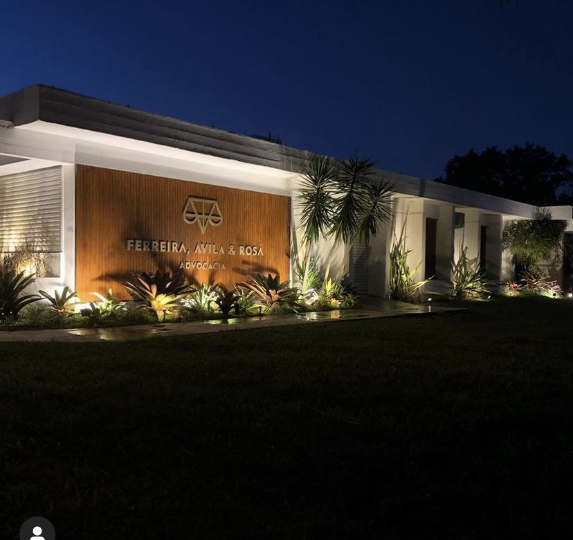
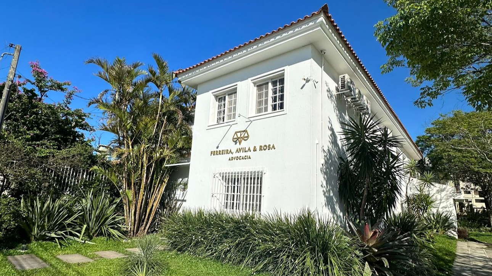

Acidentes de Trabalho Foco
Reconhecimento do acidente, estabilidade acidentária, indenização por danos morais e materiais, e acompanhamento de perto em casos que envolvem afastamento ou sequela.
Rodrigo Rosa atua com Direito do Trabalho e acidentes de trabalho em Pelotas, com nota 5,0 e 159 avaliações no Google, o maior volume entre os escritórios de advocacia trabalhista da região. Atendimento pessoal, do primeiro contato ao fim do processo, indo até a casa do cliente quando ele não pode se deslocar.


Em Pelotas, Rodrigo Rosa atua exclusivamente com Direito do Trabalho, o que inclui rescisões, verbas não pagas e, com atenção especial, casos de acidente de trabalho. Em vez de dividir a atenção entre várias áreas do direito, o escritório concentra o conhecimento numa só frente, o que se reflete diretamente em como cada processo é conduzido.
Nas avaliações públicas do Google, um padrão se repete: clientes descrevem atendimento próximo, explicações claras e disponibilidade real. Uma cliente relatou que, após sofrer um acidente e ficar impossibilitada de se locomover, foi atendida na própria casa no dia seguinte ao primeiro contato. É esse tipo de atendimento que sustenta a nota 5,0, com 159 avaliações, sem uma sequer abaixo de cinco estrelas.
Cada frente abaixo é tratada dentro da mesma especialidade, o que evita o vaivém de encaminhar o cliente para outro escritório no meio do caminho.
Reconhecimento do acidente, estabilidade acidentária, indenização por danos morais e materiais, e acompanhamento de perto em casos que envolvem afastamento ou sequela.
Verbas rescisórias não pagas, FGTS, seguro-desemprego e conferência de tudo que deveria constar no acerto final.
Horas extras não pagas, intervalos suprimidos e banco de horas fora do previsto em lei, com o cálculo real do que é devido.
LER/DORT e outras doenças relacionadas à função exercida, com o levantamento do nexo entre o trabalho e o adoecimento.
Situações de assédio moral e ambientes de trabalho abusivos que justificam o encerramento do contrato por culpa do empregador.
Trabalho prestado sem registro formal ou terceirização irregular, com a busca pelo reconhecimento dos direitos correspondentes.
É o maior volume de avaliações entre os escritórios de advocacia trabalhista individuais de Pelotas visíveis no Google Maps, sem nenhuma nota abaixo do máximo.
Quando o cliente não consegue se deslocar depois de um acidente, o atendimento acontece na casa dele, não só no escritório. É um relato real, não uma promessa de propaganda.
Um retrato do que os clientes escrevem, sem edição, sobre o atendimento de Rodrigo Rosa.
"Foi muito bom o atendimento, foi ótimo. Eu acidentei e fiquei paraplégico, meu advogado foi na minha casa me fazer o atendimento, foi ótimo."
neuza NachtigalAvaliação no Google"Super profissional e sempre atento a tudo, deixou-me tranquilo durante todo o processo. Recomendo fortemente o trabalho do Rodrigo!!"
Alex RosaAvaliação no Google"Dr. Rodrigo e o seu time foram irretocáveis na prestação de serviço, o qual a empresa e o escritório se propõem."
João Paulo SoaresLocal Guide · Avaliação no GoogleO mesmo caminho para qualquer uma das frentes de Direito do Trabalho atendidas pelo escritório.
Explicação da situação, com atenção especial quando envolve acidente ou impossibilidade de se deslocar até o escritório.
Avaliação da documentação e do histórico, com retorno claro sobre viabilidade e caminhos possíveis.
Definição da estratégia jurídica e levantamento dos valores envolvidos, com explicação sobre prazos e próximos passos.
Atualização periódica sobre o andamento, do início até a conclusão do caso, sem deixar o cliente sem resposta.
Sede no Centro de Pelotas, com atendimento presencial no escritório e, quando o caso exige, visita até a casa do cliente, como já relatado por quem passou por isso.
Estrutura acessível para pessoas em cadeira de rodas, e reconhecida no Google como uma empresa que acolhe a comunidade LGBTQ+ e liderada por empreendedoras.
As dúvidas mais comuns de quem está pensando em procurar o escritório.
Conte a sua situação e receba orientação sobre os próximos passos, com a mesma atenção que sustenta a nota 5,0 e as 159 avaliações do escritório.
Botão em fase de confirmação de número para este contato. Enquanto isso, o primeiro contato pode ser feito pelo Perfil da Empresa no Google, com resposta pessoal do escritório.
R. Gonçalves Chaves, 4647, Centro, Pelotas, RS · 96020-260